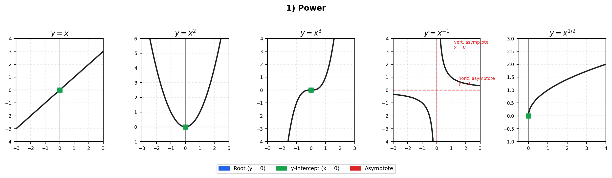
Basic Forms — Roots, Intercepts, and Asymptotes
For each function: roots (●, blue) mark where \(y = 0\); y-intercepts (●, green) mark where \(x = 0\); asymptotes are shown as dashed red lines.
1. Power Functions
\[y = x \qquad y = x^2 \qquad y = x^3 \qquad y = x^{-1} \qquad y = x^{1/2}\]
| Function | Roots | y-intercept | Asymptotes |
|---|---|---|---|
| \(y = x\) | \((0,0)\) | \((0,0)\) | none |
| \(y = x^2\) | \((0,0)\) | \((0,0)\) | none |
| \(y = x^3\) | \((0,0)\) | \((0,0)\) | none |
| \(y = x^{-1}\) | none | none | vert. \(x=0\), horiz. \(y=0\) |
| \(y = x^{1/2}\) | \((0,0)\) | \((0,0)\) | none (domain \(x \ge 0\)) |
2. Exponential / Logarithmic
\[y = e^x \qquad\qquad y = \ln x\]
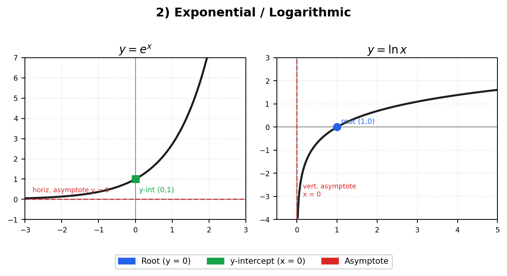
| Function | Roots | y-intercept | Asymptotes |
|---|---|---|---|
| \(y = e^x\) | none | \((0,1)\) | horiz. \(y=0\) (as \(x\to-\infty\)) |
| \(y = \ln x\) | \((1,0)\) | none | vert. \(x=0\) (domain \(x>0\)) |
3. Trigonometric
3a. sin, cos, tan
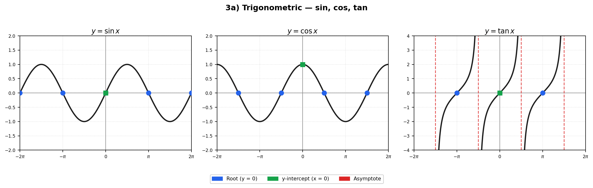
| Function | Roots | y-intercept | Asymptotes |
|---|---|---|---|
| \(y = \sin x\) | \(x = n\pi\) | \((0,0)\) | none |
| \(y = \cos x\) | \(x = \tfrac{\pi}{2}+n\pi\) | \((0,1)\) | none |
| \(y = \tan x\) | \(x = n\pi\) | \((0,0)\) | vert. \(x = \tfrac{\pi}{2}+n\pi\) |
3b. csc, sec, cot
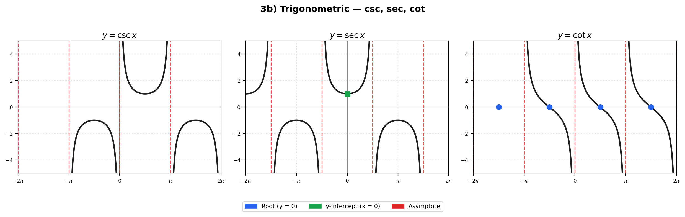
| Function | Roots | y-intercept | Asymptotes |
|---|---|---|---|
| \(y = \csc x\) | none | none | vert. \(x = n\pi\) |
| \(y = \sec x\) | none | \((0,1)\) | vert. \(x = \tfrac{\pi}{2}+n\pi\) |
| \(y = \cot x\) | \(x = \tfrac{\pi}{2}+n\pi\) | none | vert. \(x = n\pi\) |
3c. arcsin, arccos, arctan
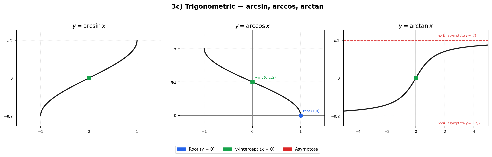
| Function | Roots | y-intercept | Asymptotes |
|---|---|---|---|
| \(y = \arcsin x\) | \((0,0)\) | \((0,0)\) | none (domain \([-1,1]\)) |
| \(y = \arccos x\) | \((1,0)\) | \((0,\pi/2)\) | none (domain \([-1,1]\)) |
| \(y = \arctan x\) | \((0,0)\) | \((0,0)\) | horiz. \(y = \pm\pi/2\) |
2. Single Transformation
Each transformation comes in two flavours — vertical (↕) and horizontal (↔︎).
| Type | Vertical ↕ | Horizontal ↔︎ |
|---|---|---|
| Translation | \(f(x) \to f(x)+a\) | \(f(x) \to f(x+a)\) |
| Stretch | \(f(x) \to af(x)\) | \(f(x) \to f(ax)\) |
| Reflection | \(f(x) \to -f(x)\) | \(f(x) \to f(-x)\) |
| Modulus | \(f(x) \to \lvert f(x)\rvert\) | \(f(x) \to f(\lvert x\rvert)\) |
TipKEY — Modulus as conditional reflection
\[ \lvert f(x)\rvert = \begin{cases} f(x), & \text{if } f(x)\ge 0 \\ -f(x), & \text{if } f(x)<0 \end{cases} \qquad\text{(reflect the part below the }x\text{-axis upward)} \] \[ f(\lvert x\rvert) = \begin{cases} f(x), & \text{if } x\ge 0 \\ f(-x), & \text{if } x<0 \end{cases} \qquad\text{(reflect the right half onto the left half)} \]
Example 1 — Modulus sketch and intersection
Given \(f(x)=|x|+2\) and \(g(x)=3\):
- Sketch \(f(x)\) and \(g(x)\) on the same diagram.
- How many intersection points are there?
- Hence, solve \(f(x)=g(x)\).
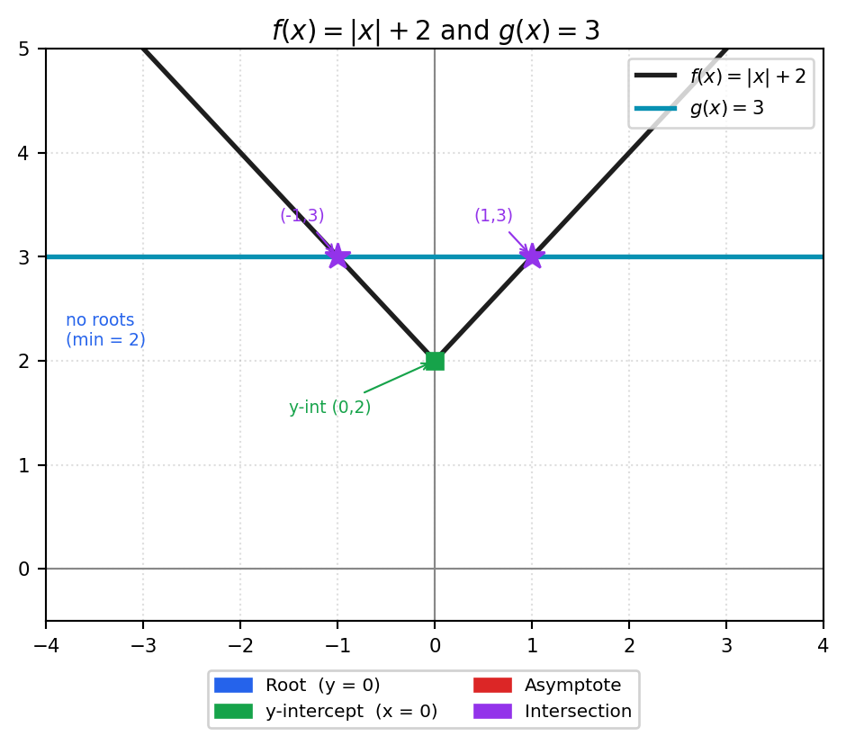
Solution:
\[ |x|+2 = 3 \implies |x|=1 \implies x = \pm 1 \]
There are 2 intersection points: \((-1,\,3)\) and \((1,\,3)\).
Example 2 — Two modulus functions
Given \(f(x)=|x|\) and \(g(x)=|x+1|\):
- Sketch \(f(x)\) and \(g(x)\) on the same diagram.
- Hence, solve \(f(x)=g(x)\).
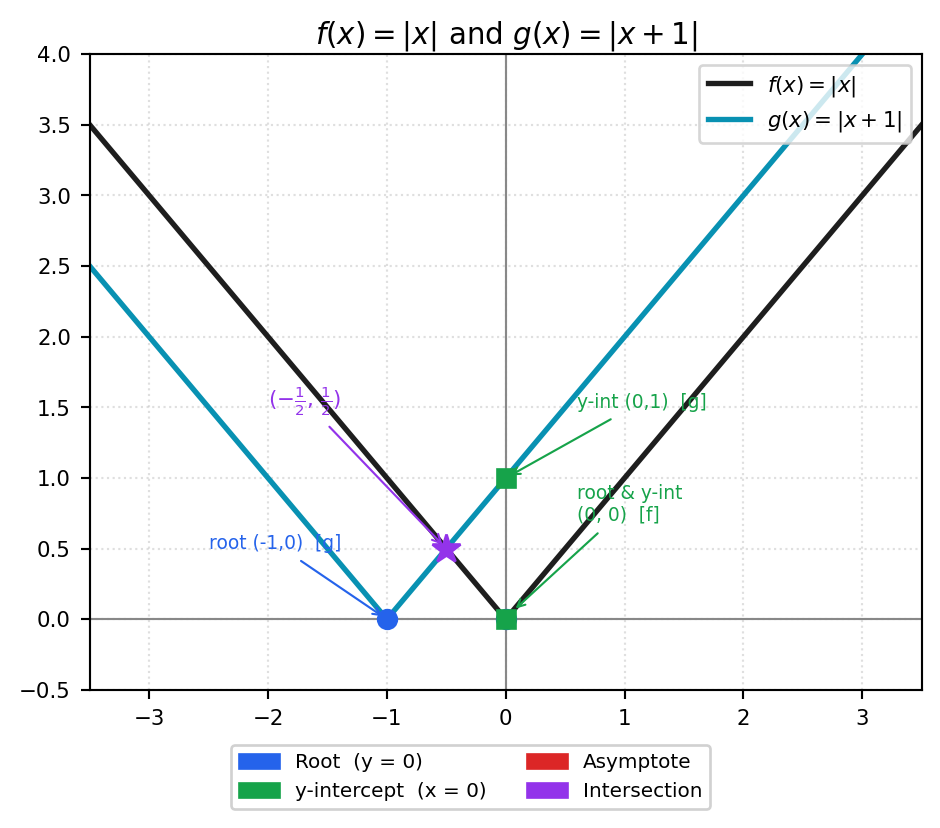
Solution:
\[ |x| = |x+1| \implies x^2 = (x+1)^2 \implies 2x+1=0 \implies x = -\tfrac{1}{2} \]
One intersection point: \(\left(-\tfrac{1}{2},\,\tfrac{1}{2}\right)\).
3. Combination of Transformations
ImportantKEY — Order of operations
Apply transformations in this order:
\[\text{stretch / reflection} \;(\times) \;\longrightarrow\; \text{translation} \;(+) \;\longrightarrow\; \text{modulus}\]
Example 3 — Describe in words
Describe each combination of transformations applied to a base function.
| Function | Base | Transformations (in order) | |
|---|---|---|---|
| i | \(y = 2x+3\) | \(y=x\) | stretch vert. ×2, then translate up 3 |
| ii | \(y = -1+e^{3x}\) | \(y=e^x\) | stretch horiz. ×\(\tfrac{1}{3}\), then translate down 1 |
| iii | \(y = -1+2e^{3x}\) | \(y=e^x\) | stretch horiz. ×\(\tfrac{1}{3}\), stretch vert. ×2, then translate down 1 |
| iv | \(y = 5-2e^{-3x}\) | \(y=e^x\) | reflect horiz. (\(x\to -x\)), stretch horiz. ×\(\tfrac{1}{3}\), stretch vert. ×2, reflect vert., then translate up 5 |
Example 4 — Sketch combinations (with all key features)
i. \(y = -1 + \sqrt{x-3}\)
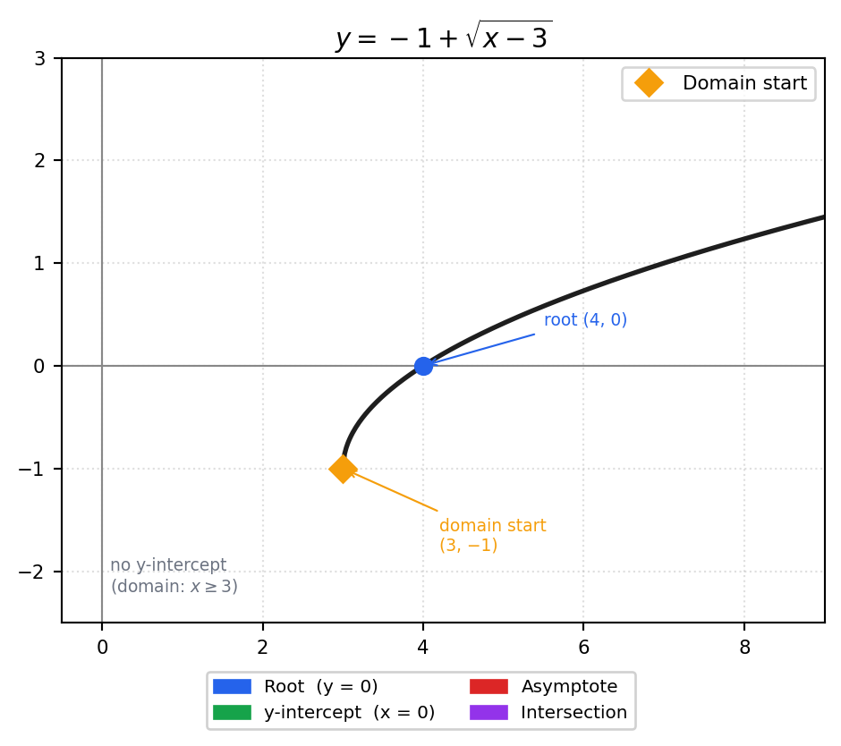
| Feature | Value |
|---|---|
| Root | \((4, 0)\) |
| y-intercept | none (domain \(x \ge 3\)) |
| Asymptote | none |
| Base | \(y=\sqrt{x}\), translated right 3, down 1 |
ii. \(y = 1 + \dfrac{3}{x-2}\) — always transform the asymptote first!
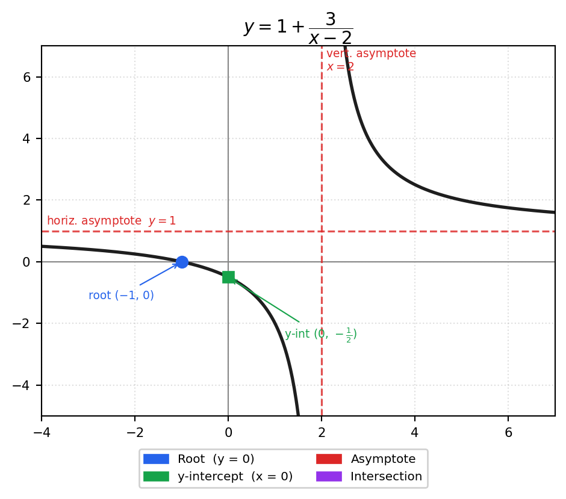
| Feature | Value |
|---|---|
| Root | \((-1, 0)\) |
| y-intercept | \(\left(0,\,-\tfrac{1}{2}\right)\) |
| Vert. asymptote | \(x = 2\) |
| Horiz. asymptote | \(y = 1\) |
iii. \(y = \left\lvert\dfrac{x+1}{x-2}\right\rvert\)
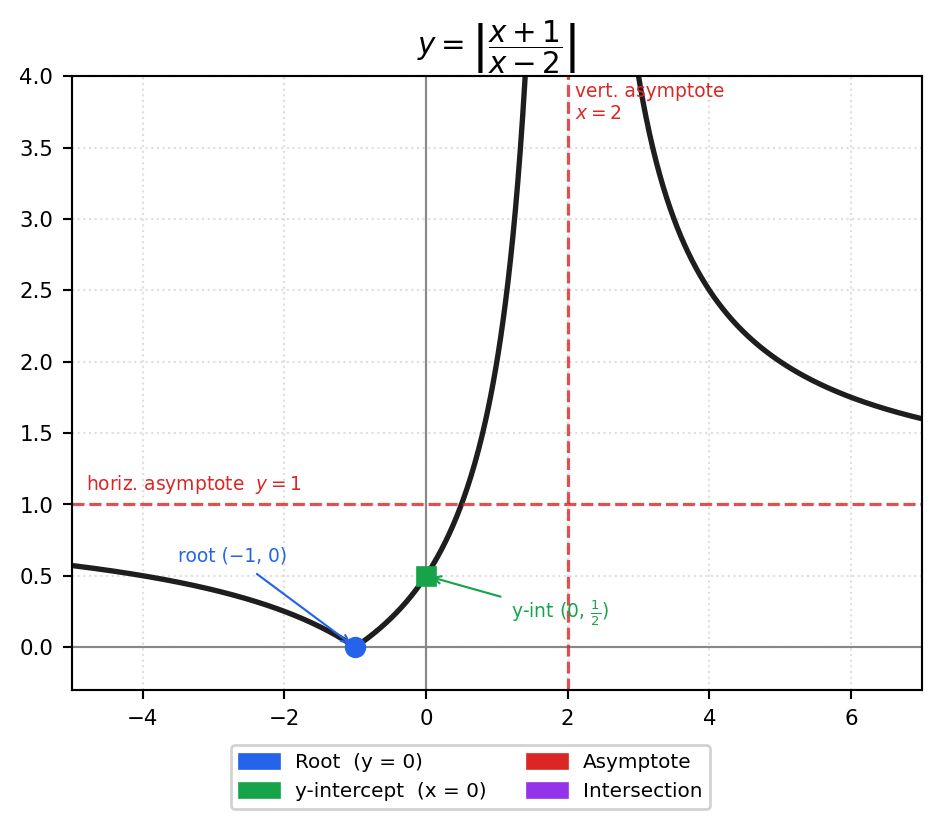
| Feature | Value |
|---|---|
| Root | \((-1, 0)\) |
| y-intercept | \(\left(0,\,\tfrac{1}{2}\right)\) |
| Vert. asymptote | \(x = 2\) |
| Horiz. asymptote | \(y = 1\) (both branches approach from above) |
iv. \(y = 2\csc\!\left(x+\dfrac{\pi}{3}\right)\), \(\quad 0 < x < 2\pi\)
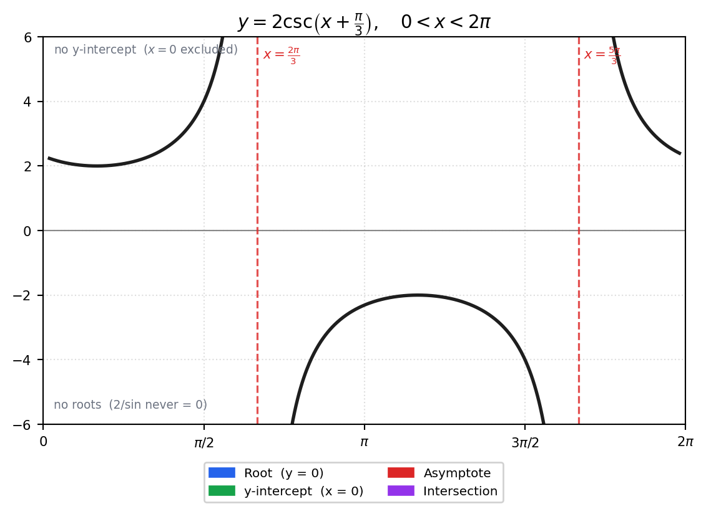
| Feature | Value |
|---|---|
| Roots | none |
| y-intercept | none (open domain \(0 < x < 2\pi\)) |
| Vert. asymptotes | \(x = \tfrac{2\pi}{3}\), \(x = \tfrac{5\pi}{3}\) |
| Amplitude | \(\times 2\) stretch of \(\csc x\); horizontal shift \(-\tfrac{\pi}{3}\) |
Note: \(\sin(x+\frac{\pi}{3})=0\) gives \(x+\frac{\pi}{3}=n\pi\), so \(x = n\pi - \frac{\pi}{3}\). Within \((0, 2\pi)\): \(x = \frac{2\pi}{3}\) (when \(n=1\)) and \(x = \frac{5\pi}{3}\) (when \(n=2\)).
Quick Reference
| Category | Horiz. asymptote | Vert. asymptote | Repeating roots |
|---|---|---|---|
| \(x^{-1}\) | \(y=0\) | \(x=0\) | — |
| \(e^x\) | \(y=0\) | — | — |
| \(\ln x\) | — | \(x=0\) | — |
| \(\tan x, \cot x\) | — | every \(\tfrac{\pi}{2}\) | every \(\pi\) |
| \(\csc x, \sec x\) | — | every \(\pi\) (shifted) | none |
| \(\arctan x\) | \(y=\pm\tfrac{\pi}{2}\) | — | — |